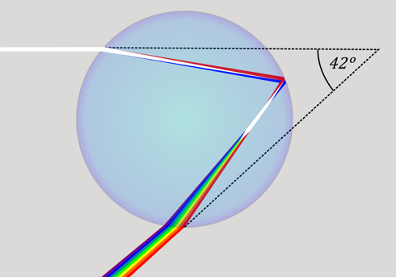
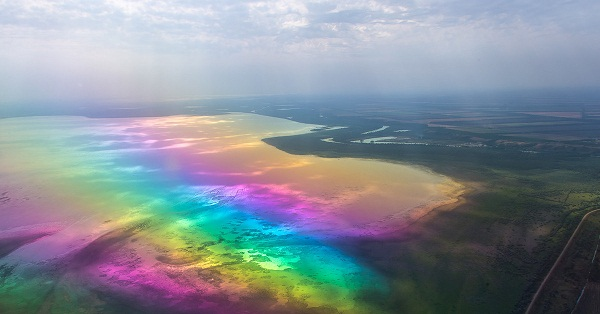

Радуга похожа на настоящую магию. Она такая красивая и волшебная в небе после дождя, когда выглядывает солнце, что заставляет нас чувствовать себя счастливыми, не так ли?
Но, как происходит это магическое волшебство? Как в небе появляются эти разноцветные дуги? Давайте разберемся.
Начнем с основ физики. Белый солнечный свет состоит из множества различных световых волн разной длины. В зависимости от длины волны он воспринимается нашим глазом как определенный цвет — от красного (самые длинные волны) до фиолетового (самые короткие). При смешении все эти цвета и дают видимый белый свет.
Принято выделять семь основных цветов, которые мы называем цветами радуги: красный, оранжевый, желтый зеленый, голубой, синий и фиолетовый. Эти цвета легко запоминаются по первым буквам известной всем из детства фразы:
Отчасти очарование радуг объясняется тем, как широко, величественно и эфемерно они раскидываются через все небо. Но, как это часто бывает в физике, в основе столь масштабного величия лежат непостижимо огромные количества чего-то исключительно малого: крошечных сферических капелек воды, иногда менее одного миллиметра в диаметре, плавающих в небе.
Хотя ученые пытались объяснить происхождение радуг как минимум на протяжении тысячи лет, первое по-настоящему убедительное объяснение предложил Исаак Ньютон в опубликованном в 1704 году труде «Оптика». Ньютон понял сразу несколько моментов, каждый из которых играет важную роль в создании радуг.
Во-первых, он продемонстрировал, что обычный белый свет состоит из всех цветов Преломляя (изгибая) свет через стеклянную призму, ученый разделил его на составные цвета.
Он также определил, что преломлять свет могут разные материалы, в том числе вода. Ньютон пришел к совершенно правильному заключению, что радуга в небе — это результат успешного сотрудничества между солнцем, несметным числом дождевых капель и нашими глазами, которые должны смотреть на эти капли строго под прямым углом.
Когда луч света проникает в каплю дождя и преломляется,он раскладывается на составляющие его цвета. Красный свет преломляется, или изгибается, меньше всех, а фиолетовый — сильнее всех.
Все эти разноцветные лучи продолжают свой путь к тыльной части дождевой капли. Одни проникают в нее и выходят, а другие отскакивают назад, или отражаются, под некоторым углом на переднюю часть капли. По сути, часть света отражается более одного раза, но для нас этот факт пока неважен; он станет важным чуть позже. На данный же момент нас интересует свет, который отражается только единожды. Когда он выходит из передней части капли, некоторая его часть снова преломляется, далее отделяя друг от друга цветные лучи разного цвета. как образуется радуга
После того как лучи солнечного света преломляются, отражаются и преломляются снова на выходе из капли, они уже направлены практически в обратную сторону.
Главная причина, почему мы видим радугу, — красный свет выходит из капли под углом от первоначального направления солнечного света при его проникновении в каплю, который всегда меньше 42 градусов.
То же самое относится ко всем дождевым каплям, потому что солнце, по сути, находится бесконечно далеко от них. Угол, под которым красный свет выходит из капли, может быть каким угодно от 0 до 42 градусов, но никогда не превышает 42 градусов, и этот максимальный угол для каждого цвета разный. Для фиолетового света он около 40 градусов. Именно из-за разных максимальных углов для каждого цвета радуга состоит из разноцветных полос.
Как увидеть радугу? Вот научный совет. Прежде всего доверяйте своей интуиции, подсказывающей вам, когда можно увидеть радугу: когда выглядывает солнце перед или сразу после дождя. Почувствовав, что все идет к этому, сделайте следующее. Во-первых, повернитесь затылком к солнцу, затем найдите тень своей головы и посмотрите под углом 42 градуса в любом направлении от воображаемой линии — мысленно нарисуйте линию, идущую от Солнца через вашу голову к дальнему концу вашей тени на земле (она будет располагаться параллельно направлению солнечных лучей, тянущихся к дождевым каплям).
Если солнечного света достаточно, равно как и количества дождевых капель, это сотрудничество света и капель будет эффективным и вы увидите в небе красочную дугу.
Предположим, что солнца вам совсем не видно — оно спрятано за облаками или зданиями, но тем не менее явно светит. Тогда вы все равно сможете увидеть радугу, если только между солнцем и каплями нет облаков. Потому что знаете, как правильно смотреть (помните про угол в 42 градуса).
Зная, как найти на небе радугу, вы наверняка начнете искать ее повсюду.
